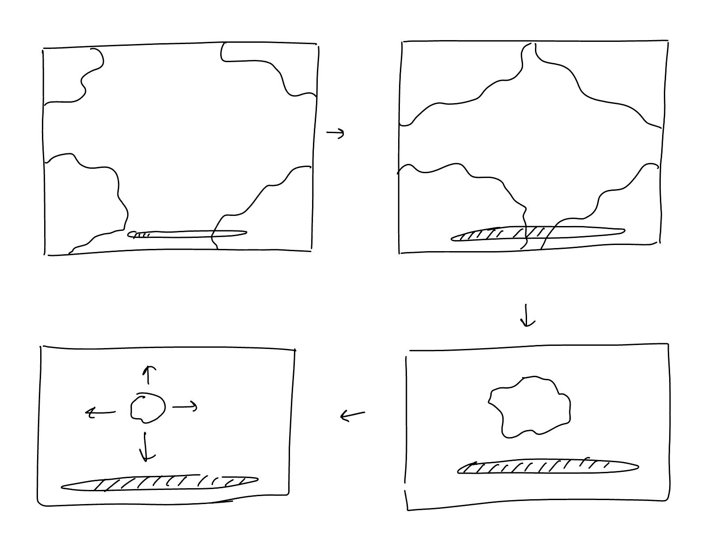
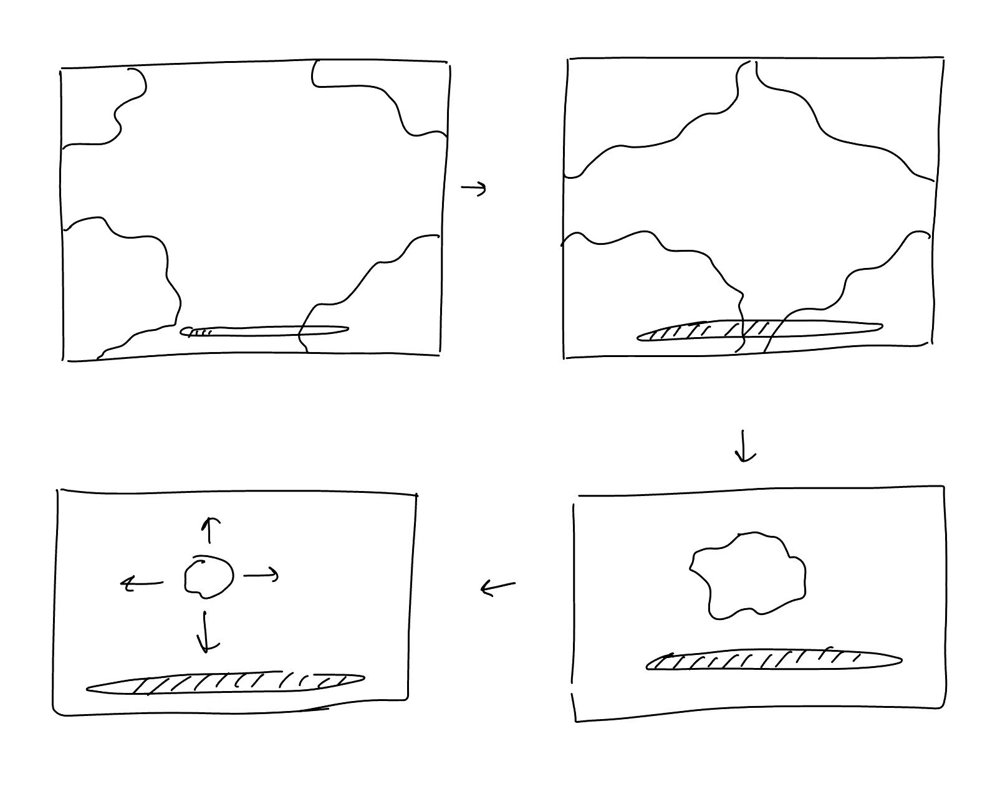

Projects CS 6067 - USER INTERFACE I
Project 4: UI for Good
For this project, I wanted to create an interactive activity or game to raise awareness for a meaningful cause. Since eyesight is incredibly important and not everyone is fortunate enough to maintain it, I decided to focus on researching the issue rather than conducting user interviews. In the process, I came across glaucoma charities and chose to work on something that could support their efforts.
Research
Through my research, I discovered that glaucoma is an eye condition that affects people in different ways. It typically begins by gradually narrowing vision from the outer edges, slowly closing in on the periphery, and eventually impairing central vision. In extreme cases, a person with glaucoma may only be able to see through a small opening. I wanted to replicate this experience by attempting to locate something with such limited vision.
Design Process
 


Interface Design
This page is all about raising awareness for glaucoma, a sneaky eye condition you might not even know about!
Here's how to play:
1. Find the Teddy: Scroll through the page and try to find the hidden teddy bear. It's trickier than it looks!
2. Learn About Glaucoma: Once you find the teddy, you'll unlock important information about glaucoma.
3. Support the Cause: We'll also show you how to support organizations that are fighting glaucoma.
Libraries & Tools used
I used SweetAlerts2 Api for alerts in this application. I didn't use anything other than that and the default Svelte application, HTML, CSS, and JavaScript.
Future Work
I plan to make the game a little but more intricate and fun to play.
I also did not get a change to make the donation page a little more interactive rather than just being a page full of information.
And finally I would love to connect the page to a legit donation portal where people can use this website to start making offical donations.
Screenshots!


Project 1: BookJournal
Design Process
Interviews
To understand user needs, I interviewed three people about if and how they track their reading and what features they would find helpful.
Questions Asked:
- Do you track the books you read? If so, how?
- What would you like to improve about how you track your reading?
- Do you set reading goals for yourself? How do you track them?
- Would you like a visual representation of your reading goals?
- Do you journal your thoughts while reading? If so, how?
- How do you categorize your books? Would categories like "Reading," "Completed," "To Be Read," and "Did Not Finish" be useful?
- Would you like to rate your books after finishing them?
- Any frustrations with current book-tracking apps?
Feedback:
The majority used a combination of apps like Libby and Google Docs or no app at all. People wanted different types of goals they could track. Visual tracking and gamified goals were of interest. Common categories like "Reading" and "Completed" were all that the people required, but they mentioned they wouldn't mind more options. Some preferred journaling after reading a book, while others liked the idea of journaling after each chapter. Although some wanted a numerical rating system, most were comfortable with a 5-star rating scale as it is generic and widely used. Overall they just wanted everything to be streamlined into one space.
Interface Design
Features and Controls
- Journaling: Users can write journal entries linked to specific books, with the ability to add multiple entries for each book.
- Book Categorization: Users can add books and sort them into categories like "Reading," "Finished," "Dropped," and "To Be Read."
- Goal Setting: Users can set goals for reading based on the number of books they read or the amount of time spent reading, with a progress bar to showcase the goal’s progress.
- Rating System: Books can be rated after completion, using a 5-star rating system.
- Editing: Users can edit the categories of each book, and can edit each journal entry along with their goal.
Implementation Details
Libraries and Tools Used
I didn't use anything extra other than the default Svelte application, HTML, CSS, and JavaScript.
Code Structure
Main Component: App.svelte is the main component that holds my book library. I pass props from App.svelte to multiple components, each handling different sections of the application. There are 7 other components apart from App: Navbar, Features, Content, Library, Rating, Books, Bookshelf.
The App component uses Navbar, Features, and Content. The Content component uses Library, Ratings, and Books. The Library component calls the Bookshelf.
Books Structure: Each book is an object in an array with properties like name, bookCategory, rating, timeSpent, chaptersRead, and journalEntries. JournalEntries is an array holding individual entries, each with properties like name, date, startChapter, endChapter, timeSpentReading, and textEntry.
Component Responsibilities:
- The Features component handles creating and displaying the goals.
- The Content component manages the journaling feature where the user is prompted to enter their name and date, then select a book they want to add the journal entry to, the start chapter, the end chapter, and finally the time spent reading those chapters.
- The Library component handles adding new books and displays the bookshelf from the Bookshelf component.
- The Ratings component manages rating a selected book and updates the category status of that selected book.
- The Books component displays all books and their associated journal entries within their respective categories.
Future Work
Planned Features & Uncompleted Work
- Styling: Some buttons throughout the application still need to be styled.
- Library and Journal Entries: I wasn't fully able to style how books and journal entries are displayed in the library.
- Navigation: Initially, there were two buttons on the navbar that opened new pages for journal entries and the library. However, to meet the deadline, I moved this content to the bottom of the main page.
- Animations: I planned to add more animations, particularly one showing a book being added when a new book is added, but I wasn’t able to implement it yet.
- Sizing: This application works best on any screen size 1440px or above. I wasn’t able to add web responsiveness just yet.
Future Plans:
- Integrate user authentication to enable long-term data storage and allow users to maintain personal libraries.
- Improve design and layout, focusing on making the application more mobile-friendly.
Screenshots:
Contact
Email: 24varshag@gmail.com